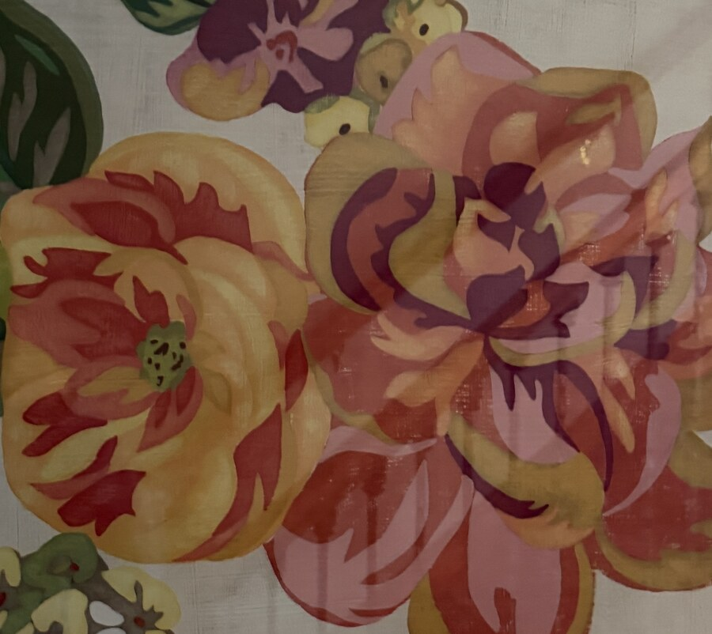
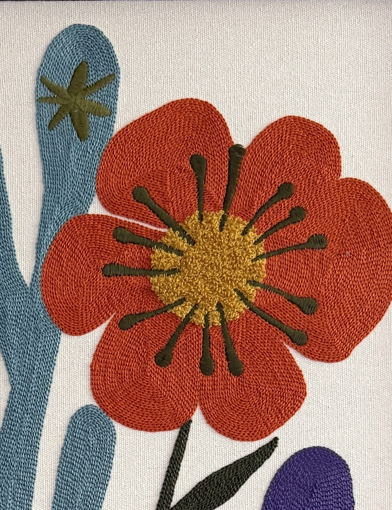

I'm Jessica, a content design leader who spent the last few years untangling Meta's ad systems into language and experiences people could actually use. Before that, I was product owner and digital strategy lead at Blue Cross Blue Shield of Michigan, and before that, I worked in newsrooms. I still write like deadlines are real, because in this job, they are.
Selected work
Meta, Ad products
Led content design for some of the highest stakes advertiser products: budget, bidding, audience and delivery. Supported eight content designers in North America and Europe and led cross-functional product strategy across eight product teams.
More experience
Blue Cross Blue Shield of Michigan
Led digital strategy and product ownership for bcbsm.com, the public-facing website of a health insurer with 7M+ members
See case studies
Where the writing started
Digital journalism at MLive and Patch and health reporting with the Association of Health Care Journalists. That's where I learned that almost nobody makes it past paragraph three.
You can see full case studies in my password-protected portfolio.
How I work
Plain over clever
It shouldn't require a glossary to understand what a button does. I make every interaction obvious and intuitive.
Systems, not screens
I look at experiences and language end to end, including before and after someone uses the product. It should all work together.
Research is the rough draft
A survey, a support ticket, a decade of journalism instinct: it's all source material. Content design is just the edit.
What's on my walls
Two pieces of art hanging in my house. I love graphic patterns, bold colors and anything with flowers. Florals bring nature inside, especially in the winter.


You'll find floral art in almost every corner of my home and even on my body. I have two tattoos of roses and hibiscus.
Let's talk shop.
Open to senior and staff content design roles. Reach out if you want to chat.